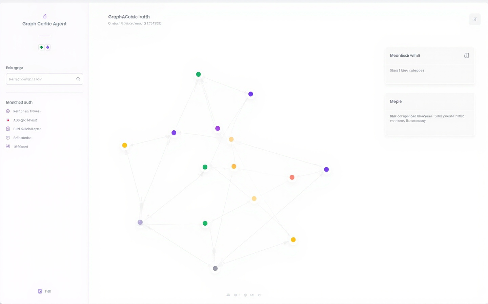
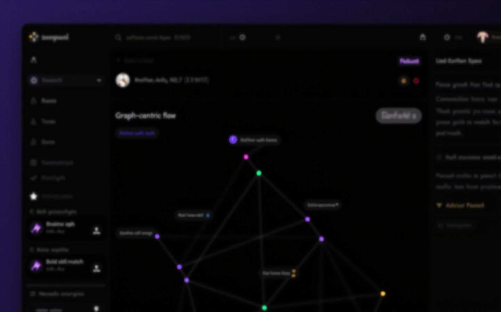
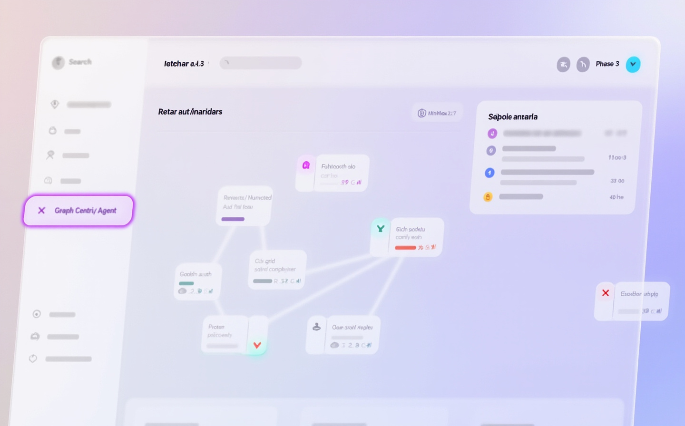
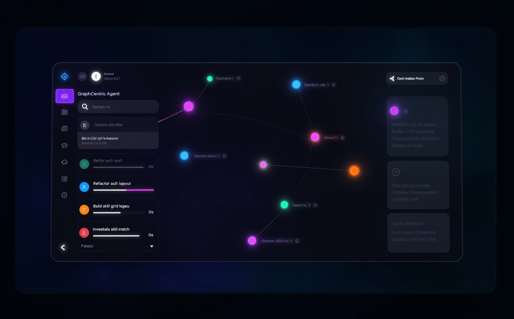
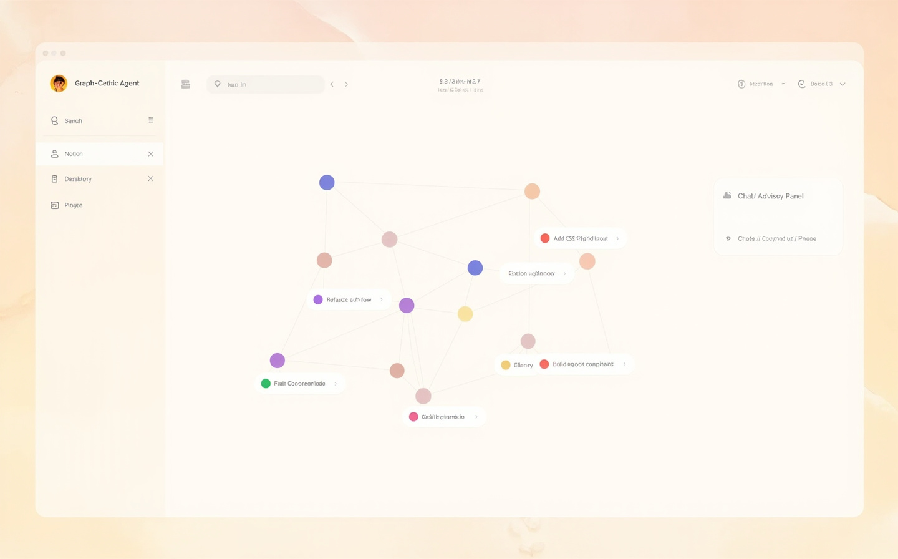
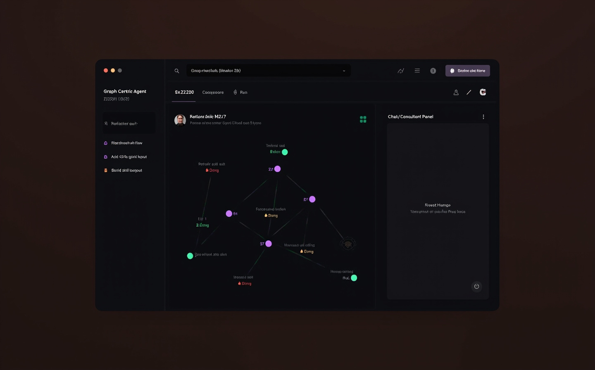
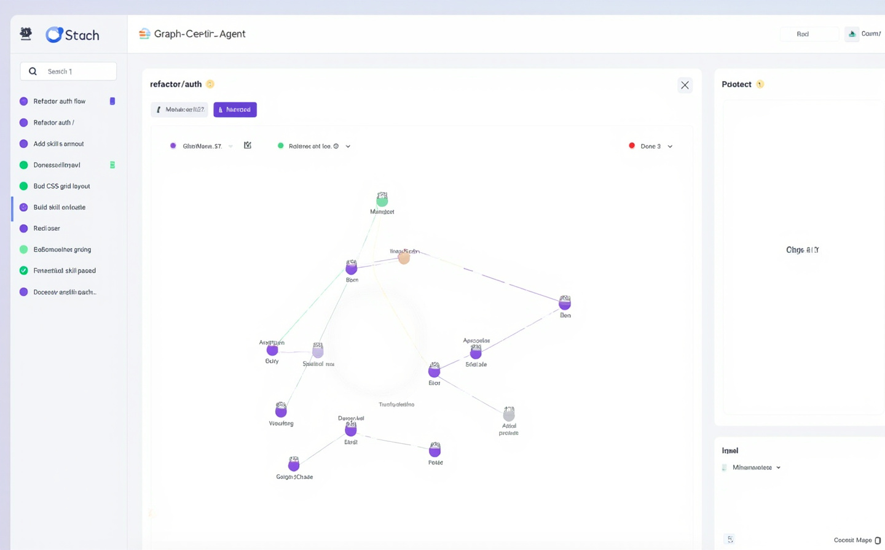
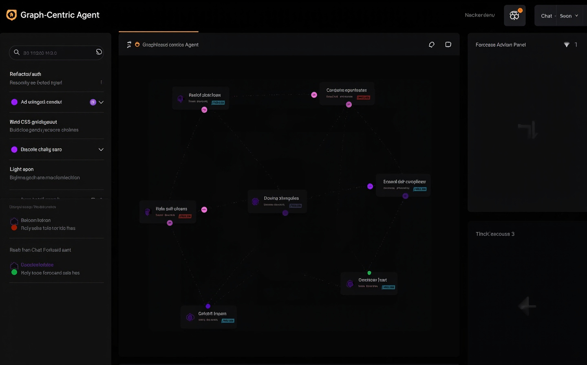

Pure whitespace, single violet accent, hairline borders — Linear / Vercel inspired.
Four visual directions × light / dark. Click any mockup to view full size. Tell me which one (or which few) to keep.

Pure whitespace, single violet accent, hairline borders — Linear / Vercel inspired.

Same as 01 inverted to deep neutral with violet glow — for night-shift use.

Frosted glass over pastel gradient — soft, modern, low contrast.

Dark frosted glass with neon purple/cyan glow — Replit / Cursor adjacent.

Warm cream paper-toned surfaces, soft shadows — Notion / Arc inspired.

Warm dark brown surfaces, muted accents — Notion at night.

Bento-grid card mosaic, mono accents — info-dense IDE-flavored.

Same as 07 inverted for late-night dev work.